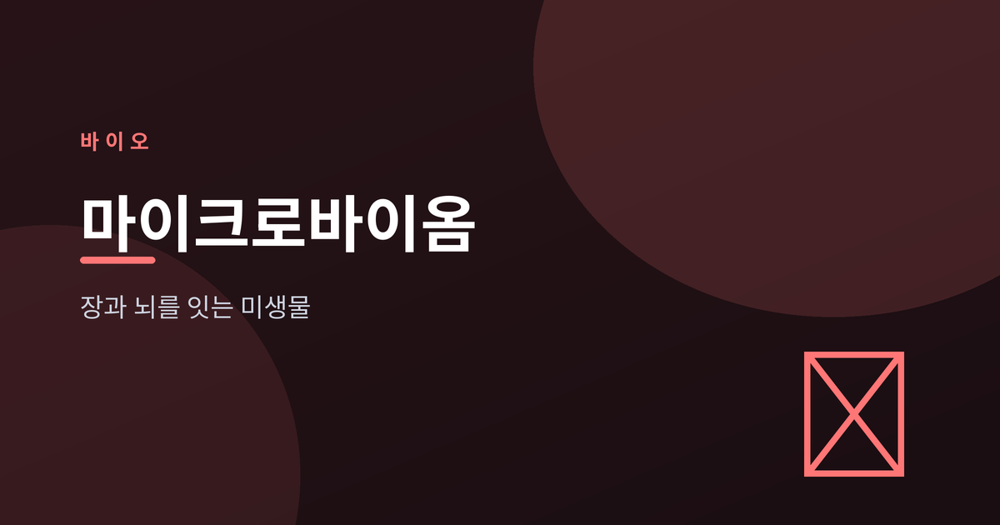
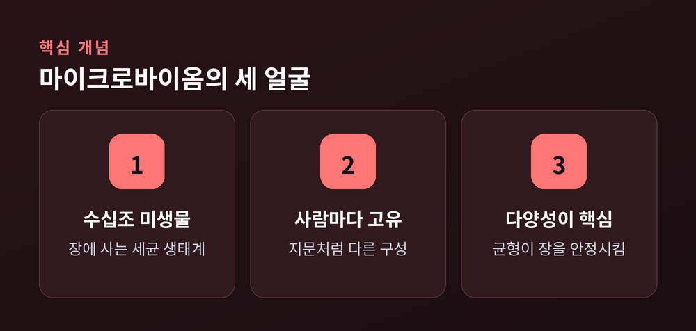
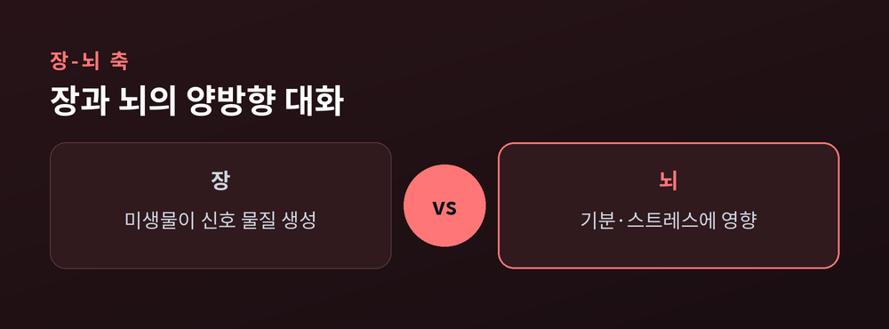
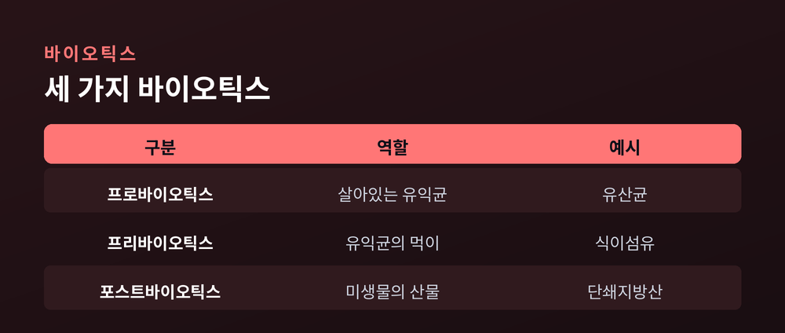

장과 뇌를 잇는 미생물의 건강 이야기

우리 장 속에는 수십조 마리의 미생물이 살고 있습니다. 이 미생물 생태계를 마이크로바이옴이라 부릅니다. 최근 연구는 이들이 소화뿐 아니라 면역과 기분에까지 관여한다고 말합니다.
마이크로바이옴은 장에 사는 세균과 그 유전자 전체를 뜻합니다. 사람마다 구성이 다르고, 지문처럼 고유합니다. 예전엔 장내 세균을 단순히 '소화를 돕는 존재' 정도로 여겼습니다. 지금은 대사, 면역 조절, 뇌 기능까지 폭넓게 관여하는 하나의 기관에 가깝게 봅니다.
핵심은 다양성입니다. 여러 종류의 유익균이 균형 있게 살수록 장 환경이 안정적이라고 알려져 있습니다. 다만 '이상적인 구성'이 하나로 정해진 것은 아닙니다. 사람마다 다르기에, 아직 연구가 진행 중인 영역이 많습니다.

장과 뇌는 서로 신호를 주고받습니다. 이 양방향 통로를 장-뇌 축(Gut-Brain Axis)이라 부릅니다. 신경, 호르몬, 면역이라는 세 갈래 길로 연결됩니다.
장내 미생물은 세로토닌 같은 신경전달물질의 재료에 관여하고, 스트레스 호르몬 리듬에도 영향을 준다고 보고됩니다. 2025년 한 연구에서는 장의 면역세포가 뇌로 이동해 행동에 영향을 줄 가능성까지 제시됐습니다. 흥미로운 결과이지만, 대부분 초기 단계이거나 동물 실험 기반입니다.
특정 균주가 불안·우울 증상을 완화했다는 임상 결과도 있습니다. 이런 균을 '사이코바이오틱스'라 부릅니다. 다만 연구마다 방법과 균주가 제각각이라, 아직 일반화하기엔 근거가 충분치 않습니다.

이름이 비슷해 헷갈리기 쉽습니다. 셋의 역할은 분명히 다릅니다. 프로바이오틱스는 몸에 이로운 살아 있는 균 자체입니다. 프리바이오틱스는 그 유익균의 먹이가 되는 성분으로, 이눌린이나 프락토올리고당 같은 식이섬유가 대표적입니다.
포스트바이오틱스는 미생물이 만들어 내는 유익한 산물입니다. 대표 주자가 식이섬유 발효로 생기는 단쇄지방산, 특히 부티르산입니다. 장 점막을 튼튼히 하고 염증을 줄이는 데 기여한다고 알려져 있습니다.
결국 가장 실천하기 쉬운 출발점은 식탁입니다. 채소, 통곡물, 콩 같은 식이섬유를 꾸준히 먹으면 유익균이 자랄 토양이 됩니다. 값비싼 보충제보다 다양한 식단이 먼저입니다.

장은 조용히, 그러나 끊임없이 우리 몸 전체와 대화하고 있습니다. 아직 밝혀지지 않은 것이 많지만, 다양한 식이섬유가 담긴 식탁은 지금 당장 시작할 수 있는 가장 확실한 한 걸음입니다.
※ 이 글은 일반적인 건강 정보이며, 의학적 진단이나 치료를 대신하지 않습니다. 증상이 있다면 전문가와 상담하시기 바랍니다.